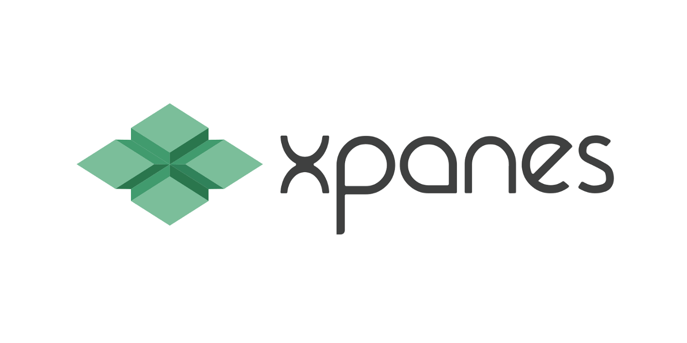
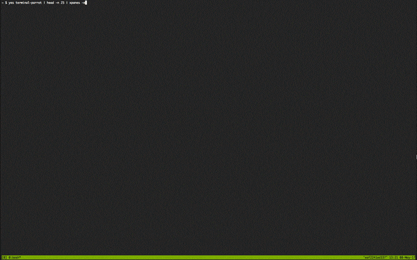
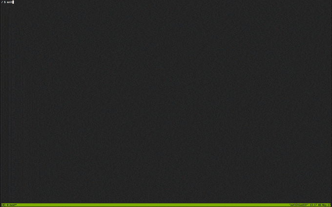

由 Tmux 提供支持的终极终端分屏器！
虽然我们已经可以使用 tmux 进行屏幕的分割和切换，但是如果需要对一批服务器进行操作的话，就只能一个一个的登录和执行了。如果使用过 Xshell 或者其他远程工具的话，肯定是使用过这个功能特性的，一次命令输出可以在登录的多个远程终端上面执行。现在我们可以使用 tmux-xpanes 来完成同样的事情了，撒花！

1. 特点介绍
the features about xpanes
- Split tmux window into multiple panes
- 将 tmux 窗口拆分为多个窗格
- Construct command lines & execute them on the panes
- 构造命令行并在窗格上执行它们
- Runnable from outside of tmux session
- Runnable from inside of tmux session
- Record operation log
- 记录操作日志
- Flexible layout arrangement for panes
- 窗格的灵活布局安排
- Select layout presets
- 选择布局预设
- Set columns or rows as you like
- 根据需要设置列或行
- Display pane title on each pane
- 在每个窗格上显示窗格标题
- Generate command lines from standard input (Pipe mode)
- 标准输入(管道模式)生成命令行
2. 工具安装
requirements: bash3.2+ and tmux1.8+
- macOS
$ brew install tmux-xpanes
- CentOS
$ sudo yum install https://dl.fedoraproject.org/pub/epel/epel-release-latest-$(rpm --eval %rhel).noarch.rpm
$ sudo yum install xpanes
- Ubuntu
$ sudo apt install software-properties-common
$ sudo add-apt-repository ppa:greymd/tmux-xpanes
$ sudo apt update
$ sudo apt install tmux-xpanes
- Manual
# Download with wget
$ wget https://raw.githubusercontent.com/greymd/tmux-xpanes/v4.1.3/bin/xpanes -O ./xpanes
# Put it under PATH and make it executable.
$ sudo install -m 0755 xpanes /usr/local/bin/xpanes
- Zsh Completion
# Clone the repository
$ git clone https://github.com/greymd/tmux-xpanes.git /path/to/tmux-xpanes
# ~/.zshrc.
$ source /path/to/tmux-xpanes/completion.zsh
3. 工具帮助
tmux-xpanes is alias of xpanes
- [Normal mode1] Outside of tmux session
- 当
tmux没有打开且xpanes在终端上执行时，xpanes的行为如下: - 它新建一个 tmux 会话，并在会话上新建窗口
- 此外，它将窗口分隔为多个窗格
- 最后，将会话附加上去
- 当
- [Normal mode2] Inside of tmux session
- 当
tmux已经打开并在现有的tmux会话上执行xpanes时，该命令的行为如下: - 它会在现有活动会话上新建一个窗口
- 此外，它将窗口分隔为多个窗格
- 最后，窗口将处于活动状态
- 当
- [Pipe mode] Inside of tmux session & Accepting standard input
- 当
xpanes在正常模式2下接受标准输入时，xpanes的行为将是一个特殊的称为“管道模式”的行为。
- 当
Usage:
xpanes [OPTIONS] [argument ...]
Usage(Pipe mode):
command ... | xpanes [OPTIONS] [<command> ...]
OPTIONS:
-h,--help Display this help and exit.
-V,--version Output version information and exit.
-B <begin-command> Run <begin-command> before processing <command> in each pane. Multiple options are allowed.
-c <command> Set <command> to be executed in each pane. Default is `echo {}`.
-d,--desync Make synchronize-panes option off in new window.
-e Execute given arguments as is. Same as -c '{}'
-I <repstr> Replacing one or more occurrences of <repstr> in command provided by -c or -B. Default is `{}`.
-C NUM,--cols=NUM Number of columns of window layout.
-R NUM,--rows=NUM Number of rows of window layout.
-l <layout> Set the preset of window layout. Recognized layout arguments are:
t tiled
eh even-horizontal
ev even-vertical
mh main-horizontal
mv main-vertical
-n <number> Set the maximum number of <argument> taken for each pane.
-s Speedy mode: Run command without opening an interactive shell.
-ss Speedy mode AND close a pane automatically at the same time as process exiting.
-S <socket-path> Set a full alternative path to the server socket.
-t Display each argument on the each pane is border as their title.
-x Create extra panes in the current active window.
--log[=<directory>] Enable logging and store log files to ~/.cache/xpanes/logs or <directory>.
--log-format=<FORMAT> Make name of log files follow <FORMAT>. Default is `[:ARG:].log.%Y-%m-%d_%H-%M-%S`.
--ssh Same as `-t -s -c 'ssh -o StrictHostKeyChecking=no {}'`.
--stay Do not switch to new window.
--bulk-cols=NUM1[,NUM2 ...] Set number of columns on multiple rows (i.e, "2,2,2" represents 2 cols x 3 rows).
--debug Print debug message.
4. 使用介绍
介绍 xpanes 工具的使用方式和简单工作模式！

| 编号 | 参数 | 含义解释 |
|---|---|---|
| 1 | -d |
打开的窗口不同步输出命令 |
| 2 | -c |
包含需要执行的命令 |
| 3 | -I |
用来指定占位符 |
| 4 | -t |
可以在每个窗格边框上显示每个参数 |
| 5 | --ssh |
助于忽略 openssh 的警报消息 |
| 6 | --log |
记录 SSH 连接多个主机并进行日志操作 |
| 7 | -s |
将不会创建新的交互式 shell 命令 |
| 8 | -ss |
屏蔽信息 |
| 9 | -x |
可以在现有窗口上创建新窗格 |
| 10 | -e |
可以在不同的窗格上执行不同的命令 |
| 11 | -B |
可以对每个窗格进行预处理 |
| 12 | -C |
来控制窗口的列 |
| 13 | -R |
来控制窗口的行 |
| 14 | --bulk-cols |
指定对应每一行的列数 |
执行如下命令，将使用
tmux工具打开四个窗口，分别执行echo n的命令。执行完成之后，我们就可以在任意一个窗口执行命令，其他窗口均会同步执行该命令。默认情况下，执行
xpanes命令之后，从键盘输入在多个窗格中是同步的。当我们使用完成之后，可以使用exit命令来退出所有打开的窗口。
# 下面两个效果等同
$ xpanes {1..4}
$ xpanes 1 2 3 4
+-------------------------------+-------------------------------+
│$ echo 1 │$ echo 2 │
│1 │2 │
│ │ │
│ │ │
+-------------------------------+-------------------------------+
│$ echo 3 │$ echo 4 │
│3 │4 │
│ │ │
│ │ │
+-------------------------------+-------------------------------+
- 如果希望，打开的窗口不同步输出命令的话，可以使用
-d/--desync参数。
# -d
$ xpanes -d 1 2 3 4
xpanes的基本选项之一-c参数，用于表示需要执行的命令。我们使用-c参数将seq命令包裹在内，其中{}表示需要被替换的参数。这个占位符可以使用-I参数来指定。
# -c
$ xpanes -c 'seq {}' 1 2 3 4
+-------------------------------+-------------------------------+
│$ seq 1 │$ seq 2 │
│1 │1 │
│ │2 │
│ │ │
│ │ │
+-------------------------------+-------------------------------+
│$ seq 3 │$ seq 4 │
│1 │1 │
│2 │2 │
│3 │3 │
│ │4 │
│ │ │
+-------------------------------+-------------------------------+
# -I
$ xpanes -I@ -c 'seq @' 1 2 3 4
# -c
$ xpanes -c "ssh myuser@{}" host1 host2
$ xpanes -c "ssh -t {} bash -ci 'll'" host-{1,2,3}
$ xpanes -c "tail -f {}" /var/log/apache/{error,access}.log /var/log/application/{error,access}.log
$ xpanes -c "ssh user@host tail -f {}" /var/log/apache/{error,access}.log /var/log/application/{error,access}.log
- 使用
--ssh选项有助于忽略openssh的警报消息，即不需要回答是/否的问题。
# 下面两个效果等同
$ xpanes --ssh myuser1@host1 myuser2@host2
$ xpanes -t -s -c "ssh -o StrictHostKeyChecking=no {}" myuser1@host1 myuser2@host2
- 使用
--log选项可以记录SSH连接多个主机并进行日志操作。
$ xpanes --log=~/operation_log -c "ssh {}" user1@host1 user2@host2
+-------------------------------+-------------------------------+
│$ ssh user1@host1 │ $ ssh user2@host2 │
│ │ │
│ │ │
│ │ │
│ │ │
+-------------------------------+-------------------------------+
$ ls ~/operation_log/
user1@host1-1.log.2017-03-15_21-30-07
user2@host2-1.log.2017-03-15_21-30-07
使用
-s选项，xpanes将不会创建新的交互式shell命令。这样的好处在于，打开多个新窗格需要很长时间(默认登录shell会加载.zshrc配置等事情)，不想在shell历史记录中留下命令。当每个进程结束时，将显示 “窗格已死…” 之类的确认消息。如果需要禁用该消息的输出，可以使用
-ss代替-s来进行屏蔽。
$ xpanes -s -c "seq {}" 2 3 4 5
+------------------------------------------+------------------------------------------+
│1 │1 │
│2 │2 │
│Pane is dead: Press [Enter] to exit... │3 │
│ │Pane is dead: Press [Enter] to exit... │
│ │ │
│ │ │
│ │ │
+------------------------------------------+------------------------------------------+
│1 │1 │
│2 │2 │
│3 │3 │
│4 │4 │
│Pane is dead: Press [Enter] to exit... │5 │
│ │Pane is dead: Press [Enter] to exit... │
│ │ │
│ │ │
+------------------------------------------+------------------------------------------+
# 屏蔽信息
$ xpanes -ss -c "seq {}" 2 3 4 5
- 使用
-t参数，可以在每个窗格边框上显示每个参数。它叫做“窗格标题”。
# 标题
$ xpanes -t -c "ping {}" 192.168.1.{5..8}
+------------------------------------------+------------------------------------------+
│ping 192.168.1.5 │ping 192.168.1.6 │
│ │ │
│ │ │
│ │ │
│ │ │
+---192.168.1.5----------------------------+---192.168.1.6----------------------------+
│ping 192.168.1.7 │ping 192.168.1.8 │
│ │ │
│ │ │
│ │ │
│ │ │
+---192.168.1.7----------------------------+---192.168.1.8----------------------------+
- 使用
-x参数，可以在现有窗口上创建新窗格。
# before
+-------------------------------+-------------------------------+
│$ │$ │
│ │ │
│ │ │
│ │ │
+-------------------------------+-------------------------------+
│ $ xpanes -x 4 5 6 │
│ │
│ │
│ │
+-------------------------------+-------------------------------+
# after
+-------------------------------+-------------------------------+
│$ │$ │
│ │ │
│ │ │
│ │ │
+-------------------------------+-------------------------------+
│$ xpanes -x 4 5 6 │$ echo 4 │
│$ │4 │
│ │$ │
│ │ │
+-------------------------------+-------------------------------+
│$ echo 5 │$ echo 6 │
│5 │6 │
│$ │$ │
│ │ │
+-------------------------------+-------------------------------+
- 使用
-e参数，可以在不同的窗格上执行不同的命令。
# 下面两个效果等同
$ xpanes -e "top" "vmstat 1" "watch -n 1 free"
$ xpanes -I@ -c "@" "top" "vmstat 1" "watch -n 1 free"
+-------------------------------+------------------------------+
│$ top │$ vmstat 1 │
│ │ │
│ │ │
+-------------------------------+------------------------------+
│$ watch -n 1 free │
│ │
│ │
+--------------------------------------------------------------+
- 使用
-B参数，可以对每个窗格进行预处理，-B选项允许在处理-c选项之前执行另一条命令。
$ xpanes -B 'echo Preprocessing' -c 'echo Test' _
+-------------------------------+
│$ echo Preprocessing │
│Preprocessing │
│$ echo Test │
│Test │
│ │
+-------------------------------+
$ xpanes -B 'echo Pre1' -B 'echo Pre2' -B 'echo Pre3' -c 'echo {}' A B C D
+-------------------------------+------------------------------+
│$ echo Pre1 │$ echo Pre1 │
│Pre1 │Pre1 │
│$ echo Pre2 │$ echo Pre2 │
│Pre2 │Pre2 │
│$ echo Pre3 │$ echo Pre3 │
│Pre3 │Pre3 │
│$ echo A │$ echo B │
+-------------------------------+------------------------------+
│$ echo Pre1 │$ echo Pre1 │
│Pre1 │Pre1 │
│$ echo Pre2 │$ echo Pre2 │
│Pre2 │Pre2 │
│$ echo Pre3 │$ echo Pre3 │
│Pre3 │Pre3 │
│$ echo C │$ echo D │
+-------------------------------+------------------------------+
- 使用
-C和-R参数，来控制窗口的列和行。
$ xpanes -C 2 AAA BBB CCC DDD
+------------------------------+------------------------------+
│$ echo AAA │$ echo BBB │
│ │ │
│ │ │
+------------------------------+------------------------------+
│$ echo CCC │$ echo DDD │
│ │ │
│ │ │
+------------------------------+------------------------------+
$ xpanes -R 5 AAA BBB CCC DDD EEE FFF GGG HHH
+------------------------------+------------------------------+
│$ echo AAA │$ echo BBB │
│ │ │
+------------------------------+------------------------------+
│$ echo CCC │$ echo DDD │
│ │ │
+------------------------------+------------------------------+
│$ echo EEE │$ echo FFF │
│ │ │
+------------------------------+------------------------------+
│$ echo GGG │
│ │
+-------------------------------------------------------------+
│$ echo HHH │
│ │
+-------------------------------------------------------------+
- 使用
--bulk-cols参数可以接受逗号分隔的数字，每个数字对应每一行的列数。
$ xpanes --bulk-cols=1,3,1,2,5 {A..L}
+-------------------------------------------------------------+
│$ echo A │
│ │
+-------------------------------------------------------------+
│$ echo B │$ echo C │$ echo D │
│ │ │ │
+-------------------------------------------------------------+
│$ echo E │
│ │
+-------------------------------------------------------------+
│$ echo F │$ echo G │
│ │ │
+-------------------------------------------------------------+
│$ echo H │$ echo I │$ echo J │$ echo K │$ echo L │
│ │ │ │ │ │
+-------------------------------------------------------------+
- 当
xpanes命令接受标准输入时，将激活管道模式。在这种模式下，xpanes的行为类似于UNIX系统的xargs命令。
$ seq 3 | xpanes
+------------------------------+------------------------------+
│$ echo 1 │$ echo 2 │
│1 │2 │
│ │ │
│ │ │
+------------------------------+------------------------------+
│$ echo 3 │
│3 │
│ │
│ │
+------------------------------+------------------------------+
$ seq 4 | xpanes seq
$ seq 4 | xpanes -c 'seq {}'
$ cat ~/.ssh/config | awk '$1=="Host"{print $2}' | xpanes ssh
- 恢复断开连接的会话，即出现异常情况的话，终端断开连接，我们也可以使用
xpanes来恢复Tmux会话。
# 默认情况会创建：~/.cache/xpanes/socket.<PID>
$ ls ~/.cache/xpanes/socket.*
/home/user/.cache/xpanes/socket.1234
# 会话恢复
$ tmux -S /home/user/.cache/xpanes/socket.1234 attach
- 使用
-S参数，与他人共享终端会话
# 与他人共享终端会话 - user1
[user1@host] $ xpanes -S /home/user1/mysocket a b c d ...
# 与他人共享终端会话 - user2
[user2@host] $ tmux -S /home/user1/mysocket attach
5. 一个彩蛋
Let’s play!
- terminal-parrot
$ yes terminal-parrot | head -n 25 | xpanes -e

- sl
$ yes 'sl -l' | head | xpanes -elev

6. 参考文档
send a rose, the hand has lingering fragrance